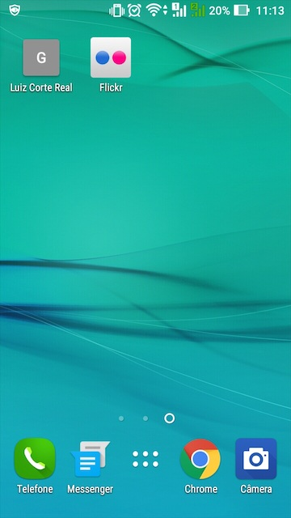
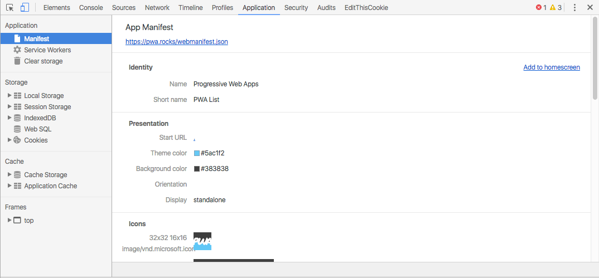
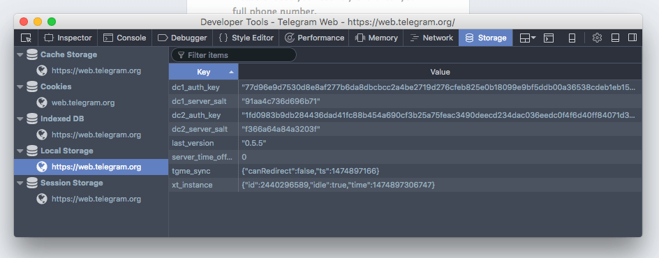
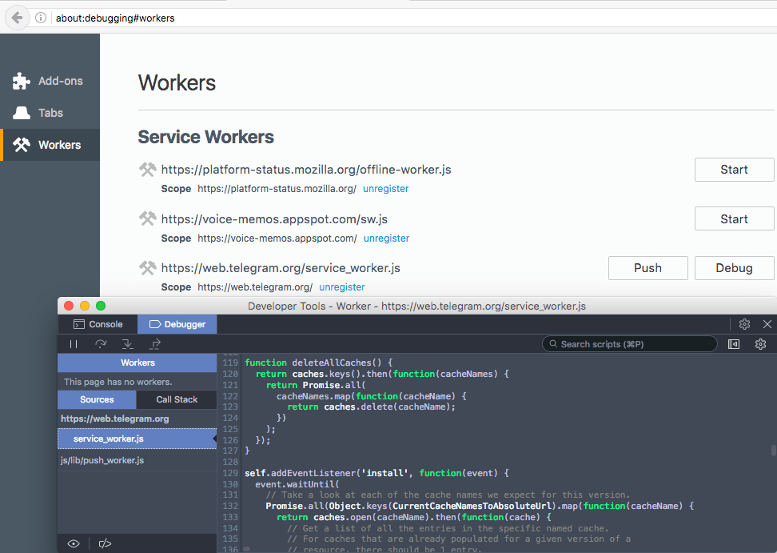

A tecnologia por trás de progressive web apps
Publicado em:
@luiz
Se você trabalha com web, provavelmente já deve ter ouvido falar no termo progressive web app. Essa é uma tendência que vem aparecendo muito forte, impulsionada principalmente pelo Google, que até já organizou um evento especificamente sobre esse tema.
O Fabricio Teixeira já escreveu um post explicando bem o conceito de progressive web apps. O objetivo aqui, então, vai ser explorar um pouco mais o lado técnico dessa tendência: como a tecnologia evoluiu para chegarmos nesse ponto, o que temos de ferramentas e o que ainda está por vir.
Tudo começou há um tempo atrás...
A ideia de tentar transformar um site em algo mais próximo de um aplicativo não é tão nova quanto parece. A partir do momento em que os celulares começaram a ser capazes de ter aplicativos com boa usabilidade, os provedores de conteúdo e de serviços começaram a disponibilizar aplicativos para melhorar a experiência de seus usuários. A melhora da experiência vinha por conta de uma melhor integração com o sistema nativo e performance.
Conforme os desenvolvedores foram percebendo a importância desses fatores para uma melhor experiência do usuário, começaram a surgir algumas especificações que procuram tornar os sites mais próximos do sistema operacional, com acesso a mais recursos do dispositivo e sem tanta dependência de conectividade para funcionar. Dentre elas, podemos citar:
- APIs de acesso a sensores do dispositivo
- Geolocalização (
navigator.geolocation) - Câmera/microfone (
navigator.mediaDevices.getUserMedia) - Giroscópio/acelerômetro (eventos
deviceorientationedevicemotion, respectivamente)
- Geolocalização (
- LocalStorage/SessionStorage (
window.localStorage/window.sessionStorage) - Indexed Database (
window.indexedDB) - Manifesto para aplicações web (
link rel="manifest") - A falecida especificação de cache de aplicação (atributo
manifestna taghtml) - A especificação de
CacheStorage, que veio substituir o cache de aplicação (window.caches) - Service workers (
navigator.serviceWorker)
Neste post, vamos focar nas APIs que permitem uma experiência "app" para qualquer tipo de site, que são as APIs de armazenamento (LocalStorage/SessionStorage, Indexed Database, Cache de aplicação e CacheStorage), o manifesto para aplicações web e os service workers.
LocalStorage e SessionStorage
Armazenar informações sobre o usuário na máquina dele sempre foi um requisito técnico importante para conseguirmos fornecer uma experiência personalizada para quem usa nosso site ou aplicação. Por muito tempo, os cookies do navegador cumpriram esse papel, mas com algumas limitações.
Os cookies foram projetados para facilitar o envio de informações relativas a um usuário para o servidor da aplicação; eles são enviados a cada requisição feita ao servidor e, portanto, não podem conter muita informação. Por isso, normalmente eles incluem apenas um código que identifica o usuário, e o resto das informações personalizadas, tais como nome de usuário, avatar, preferências etc. ficam todas no servidor.
No entanto, com a possibilidade de criar aplicações cada vez mais ricas do lado do cliente, com navegadores mais poderosos e bibliotecas JavaScript mais sofisticadas, surgiu a necessidade de armazenar mais informações no navegador do cliente. Como os cookies precisam ser leves, era necessário algo com esse propósito específico; surgiam então as especificações de LocalStorage e SessionStorage.
Ambas são muito parecidas: especificam um objeto no escopo global do JavaScript que permite associar uma chave e um valor, ambos textuais. Esse objeto é único por domínio (por subdomínio, na verdade), ou seja, sua aplicação pode usá-lo tanto para armazenar informações específicas de uma página como informações mais genéricas.
A diferença entre elas está no tempo de vida da informação armazenada nesses objetos. O objeto window.localStorage armazena as informações indefinidamente, até que o usuário apague-as explicitamente por meio das configurações do navegador. Já o objeto window.sessionStorage armazena as informações até que você feche a aba ou janela do navegador.
Por serem objetos de armazenamento exclusivamente local, o LocalStorage e o SessionStorage têm capacidade de armazenamento de informações muito maior do que os cookies, sem afetar em nada a velocidade de comunicação com o servidor. A capacidade exata varia de acordo com o navegador, mas fica na faixa dos megabytes (você pode verificar os limites do seu navegador usando o Web Storage Support Test).
Indexed Database
Ter um espaço de armazenamento no cliente já permite criar aplicações muito mais ricas no cliente. Porém, conforme aumenta a complexidade da aplicação, cresce também a complexidade dos dados que ela precisa armazenar e consultar. Surge, então, a necessidade de algo mais sofisticado que o LocalStorage ou o SessionStorage, que permita o armazenamento e a consulta de dados mais estruturados.
Nessa linha, surgiram duas especificações em paralelo: a especificação Web SQL Database e a especificação Indexed Database. A primeira, implementada experimentalmente nos navegadores baseados em WebKit (Chrome, Safari, Opera etc.), tenta trazer uma base de dados com suporte a SQL para o navegador. A segunda, que acabou se tornando a recomendação da W3C e que já é bem suportada por todos os navegadores mais modernos, segue uma abordagem diferenciada, com uma API de mais baixo nível de acesso aos dados armazenados.
A especificação Indexed Database acabou tornando-se a escolha oficial para armazenamento de dados pela falta de um padrão claro na linguagem SQL e pelo poder que uma API de mais baixo nível fornece aos desenvolvedores (você pode ler mais sobre esses pontos no blog de desenvolvedores da Mozilla). Com essa especificação, é possível implementar inúmeras bibliotecas de mais alto nível sobre ela, inclusive bibliotecas que dão suporte a algum tipo de SQL.
Tendo uma base de dados sofisticada como uma Indexed Database disponível, já é possível criar aplicações incríveis que não precisam acessar o servidor o tempo todo. No entanto, a experiência do usuário não se aproxima da experiência de uso de uma aplicação nativa apenas com poder de processamento. É necessário lidar ainda com a parte mais visual da experiência, além dos problemas de conectividade inerentes aos dispositivos móveis. Afinal, mesmo as aplicações mais sofisticadas precisam sincronizar os dados com um servidor de vez em quando. As próximas especificações lidam justamente com essas questões.
Manifesto para aplicações web
Quando acessamos uma página da web, ela é aberta dentro de um navegador. O navegador adiciona, ao redor do conteúdo, barra de endereços, menu, ícones de extensões, barra de status etc. Tudo isso atrapalha a experiência do usuário quando queremos que ele realize tarefas na nossa aplicação, não é verdade? Compare com a experiência de acessar um aplicativo: toda a tela pode ser usada por ele, tornando a experiência mais imersiva e aproveitando melhor o espaço de tela, que é restrito.
Fora isso, é comum que os usuários criem atalhos para seus aplicativos favoritos. No entanto, é difícil ver atalhos para sites. Por que? No Google Chrome, por exemplo, existe a opção de adicionar à tela inicial um atalho para o site que estamos visitando. Mas, quando fazemos isso num site simples, o atalho não é tão fácil de identificar quanto um atalho de aplicativo.

Para melhorar esses pontos, surgiu a especificação do manifesto para aplicações web. Com ele, você consegue especificar se seu site deve ser visualizado com a barra de endereços ou em tela cheia (propriedade display); qual orientação de tela é mais adequada para seu site (retrato, paisagem ou indiferente, na propriedade orientation); qual a cor principal do tema de cores do site (propriedade theme_color, útil para customizar a cor da janela do navegador); e qual nome e ícone deve ter o atalho na área de trabalho (propriedades short_name e icons, respectivamente).
Usar essa especificação é simples: basta escrever um arquivo no formato JSON seguindo a especificação:
{
"name": "Elo7",
"short_name": "Elo7",
"icons": [
{
"src": "//images.elo7.com.br/marketplace/assets/web/common/png/favicon/32x32-negative.png",
"sizes": "32x32",
"type": "image/png",
"density": 0.75
},
{
"src": "//images.elo7.com.br/marketplace/assets/web/common/png/favicon/48x48-negative.png",
"sizes": "48x48",
"type": "image/png",
"density": 1.0
},
{
"src": "//images.elo7.com.br/marketplace/assets/web/common/png/favicon/64x64-negative.png",
"sizes": "64x64",
"type": "image/png",
"density": 1.5
},
],
"start_url": "/?elo7_source=web_app_manifest",
"display": "standalone",
"orientation": "portrait",
"theme_color": "#FDB933",
"background_color": "#FDB933"
}
e referenciá-lo nas páginas de seu site com a tag <link>:
<link rel="manifest" href="manifest.json">
Com isso, sua aplicação web já começa a ganhar uma aparência de aplicativo! Mas a experiência de navegação ainda é de um site: uma conexão ruim afeta diretamente a experiência.
AppCache: uma primeira tentativa de experiência offline
A única forma de fazer com que a aplicação não dependa de conectividade com a internet para funcionar é fazer com que os recursos de que ela depende sejam armazenados no dispositivo do usuário.
Já existe há muito tempo a ideia de cachear recursos no navegador do cliente. A ideia é guardar algumas informações como arquivos CSS, Javascript e imagens que mudam pouco no site. Assim, na próxima visita do usuário, ele não precisa baixar de novo essas informações. No entanto, mesmo tendo esses dados armazenados, o navegador ainda faz requisições para carregar o HTML inicial e verificar se é necessário atualizar os dados em cache.
Para tentar resolver esse problema, surgiu a especificação AppCache. A ideia é parecida com a do manifesto de aplicação: você escreve um arquivo descrevendo os dados que seu site necessita para funcionar offline e qual o comportamento dele nessa situação:
CACHE MANIFEST
index.html
estilo.css
logo.svg
banner.png
interacoes.js
Em seguida, referencia esse arquivo no seu HTML usando um atributo na tag <html> para que o navegador possa carregá-lo:
<html manifest="elo7.appcache">
...
</html>
Com essas informações, o navegador consegue fornecer uma versão offline do seu site ou aplicação web para o usuário quando necessário.
Apesar de parecer uma solução simples e efetiva, ela vem com uma série de complicações. Primeiro, uma vez que o conteúdo tenha sido cacheado pelo AppCache, o navegador do usuário vai sempre usar a versão cacheada. Ou seja, para servir uma nova versão da aplicação para seu usuário, você vai precisar força-lo a atualizar o cache, e isso não é nada fácil. O AppCache só é atualizado quando o arquivo de manifesto é alterado e, além disso, os arquivos por ele referenciados devem ser atualizados de acordo com as regras de cache HTTP tradicional.
Fora essas dificuldades com atualização, o AppCache também não fornece um controle muito forte sobre o que vai ser cacheado e por quanto tempo. Dependendo de como for utilizado, o cache pode crescer indefinidamente, gerando sérios problemas para o usuário.
Felizmente, uma nova especificação, muito mais poderosa, veio resolver a questão da experiência offline e quase offline (sabe aqueles momentos em que o 3G começa a falhar?) e enterrou a especificação AppCache.
Service workers
Em meados de 2014, surgiu a primeira versão dessa nova especificação, trazendo um mundo enorme de possibilidades com ela. Pela primeira vez na web, uma página poderia especificar um arquivo Javascript para executar além do escopo da própria página e controlar totalmente o acesso a recursos externos.
navigator.serviceWorker.register('sw.js')
.then(function(sw) {
// service worker registrado!
}).catch(function() {
// falha ao registrar service worker
});
Para evitar problemas de segurança, esse é um recurso que está disponível apenas para páginas servidas via HTTPS (criptografia).
Na especificação AppCache, a estratégia de cache e fallback ficava toda a cargo do navegador; era inflexível. Com os service workers, o controle passa todo para o desenvolvedor. Ele pode implementar a mesma estratégia do AppCache (servir o conteúdo cacheado e atualizar em background) ou outra totalmente diferente, como acessar o cache e a rede ao mesmo tempo para responder rapidamente a uma requisição sem deixar de atualizar sempre o conteúdo. Nesse caso, o service worker trabalha em conjunto com outra especificação: CacheStorage, um cache programável voltado para o armazenamento de recursos pelo service worker.
// sw.js
self.addEventListener('install', function(event) {
event.waitUntil(
caches.open('meusite-v1').then(function(cache) {
return cache.addAll([ /* URLs aqui */ ]);
})
);
});
self.addEventListener('fetch', function(event) {
event.respondWith(
// sua estratégia para offline aqui
);
});
Além do controle de acesso à rede, que por si só já é muito valioso, o service worker também permite trabalhar com sincronização de dados em background e push notifications, recursos que já existem há muito tempo em aplicações nativas e são fundamentais para uma experiência de uso mais fluida e para aumentar o engajamento do usuário com o site ou a aplicação.
Ferramentas para o desenvolvedor
Em conjunto com novas APIs, estão surgindo também cada vez mais ferramentas que auxiliam o desenvolvedor na elaboração de aplicações para a web. Recentemente, o Google Chrome incluiu no seu painel de ferramentas para desenvolvedores, o DevTools, uma nova aba chamada Application, que reúne inspetores/controladores para as APIs mais frequentemente usadas no desenvolvimento de aplicações web.

É possível verificar o estado de registro e funcionamento do service worker da página aberta, forçar seu recarregamento, verificar se a especificação do manifesto da aplicação está correta, quais arquivos e rotas foram cacheadas e muito mais.
No Firefox, também é possível inspecionar os dados armazenados pela aplicação na aba Storage das ferramentas de desenvolvedor, e o service worker numa aba separada, específica para ele.


Safari e Edge estão a caminho de fornecer suporte às APIs necessárias e ferramentas de auxílio aos desenvolvedores. É possível acompanhar a evolução dos navegadores, pelo menos quanto ao suporte a service workers, no site Is ServiceWorker Ready?.
Mas... e o suporte?
Sempre que surge uma nova tecnologia ou uma nova API, aparece o mesmo questionamento na cabeça dos desenvolvedores: mas como começar a trabalhar com isso se tenho que continuar dando suporte a navegadores antigos, com poucos recursos? O termo progressive web app inclui essa preocupação. A palavra progressive implica que, antes de mais nada, sua aplicação deve funcionar como um site comum, independentemente do suporte do navegador. As tecnologias comentadas nesse post são usadas pela aplicação para melhorar a experiência do usuário, não para determinar quem pode e quem não pode acessar o site.
Desenvolver uma progressive web app, ou PWA para simplificar, significa ter constantemente a preocupação de fazer a aplicação ser acessível por todos, sem quebrar. Implica em ter diversas verificações no código para garantir que uma API só será chamada se ela estiver presente no navegador, como, por exemplo, na hora de registrar um service worker:
if ('serviceWorker' in navigator) {
navigator.serviceWorker.register('sw.js')
.then(function(sw) {
// service worker registrado!
}).catch(function() {
// falha ao registrar service worker
});
}
No código acima, o if garante que o navegador tem suporte a service worker antes de começar a usar a API. Assim, caso o navegador não tenha esse suporte, o resto do Javascript do site continua funcionando normalmente.
Essa preocupação também implica em garantir que o desempenho do site ou da aplicação seja razoável mesmo em condições precárias de conectividade e de capacidade de processamento. Para isso, ajuda pensar primeiro nos cenários mais limitados. Isso é uma forma de trabalhar que é conhecida para quem trabalha com web, e que se torna cada vez mais importante conforme temos mais poder nas mãos. É o conceito de progressive enhancement, e agora temos que considerá-lo na implementação de aplicações web.
O futuro
As tecnologias envolvidas com as PWAs ainda são bem recentes e, portanto, vão amadurecer bastante. A começar pelo suporte dos navegadores (tanto funcionalidade quanto ferramentas de desenvolvedores). O suporte a service workers e as funcionalidades que deles dependem (sincronização em segundo plano, push notifications) está só no começo e a expectativa, agora, é de que o Safari implemente suporte, para que web apps mais ricas funcionem bem nos dispositivos da Apple. Vale notar que o Edge, navegador da Microsoft, deve ganhar suporte a service workers em breve.
Outro ponto que deve evoluir bastante nos próximos meses é a caracterização automática de PWAs pelos navegadores. Isso é importante para que o navegador disponibilize de forma clara para o usuário a opção de adicionar a aplicação à tela inicial do dispositivo, que é o passo básico para que o usuário passe a enxergar um endereço web como uma aplicação. O Google Chrome já conta com alguns critérios para mostrar, automaticamente, uma mensagem convidando o usuário a instalar a aplicação, dentre eles a presença de um manifesto e de um service worker na página em questão (o autor desses critérios escreveu sobre eles em seu blog, em inglês). Esses critérios ainda estão sendo aperfeiçoados com base no feedback de desenvolvedores e usuários, e podem mudar consideravelmente, principalmente com a evolução do suporte de PWAs por outros navegadores.
Aqui no Elo7, estamos aos poucos implementando os requisitos necessários para transformar nosso site numa PWA. O manifesto de aplicação web já está lá! Os próximos passos incluem a migração da infraestrutura toda para HTTPS para, assim, podermos começar a usar service workers em algumas páginas. E você, na sua empresa, como está considerando a implementação de PWAs? Compartilhe conosco nos comentários ou via Twitter, na tag #elo7tech.